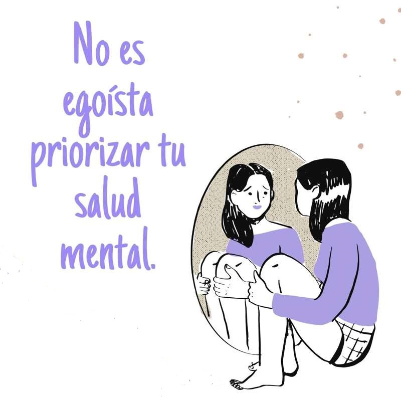

Factores
- Historia de Trauma o Abuso: Experiencias traumáticas pasadas pueden tener un impacto significativo en la salud mental.
- Ambiente Familiar: Conflictos familiares, abuso o negligencia pueden tener un impacto negativo.
- Factores Socioeconómicos: Desigualdades económicas, pobreza o falta de recursos pueden contribuir al estrés y afectar la salud mental.
- Tecnología y Redes Sociales: El uso excesivo de tecnología y las interacciones en redes sociales pueden influir en la autoestima y la percepción del mundo.
- Presión Académica: Expectativas académicas elevadas y el estrés asociado con el rendimiento académico pueden afectar la salud mental de los jóvenes.

Estigmas e ideas erroneas
- Los estigmas sociales:La percepción negativa que la sociedad tiene hacia las personas con problemas de salud mental.
- Estigma Familiar:La falta de apoyo o comprensión por parte de la familia.
- Estigma Institucional:Barreras en el acceso a servicios de salud mental debido a estigmatización por parte de instituciones de atención médica.
- Estigma en los Medios de Comunicación:La representación negativa y estigmatizante de los trastornos mentales en películas, programas de televisión y otros medios.
- Estigma en los Medios de Comunicación:La representación negativa y estigmatizante de los trastornos mentales en películas, programas de televisión y otros medios.
Consejos para el Equilibrio entre Trabajo y Vida
- Establece Límites:Define límites claros entre tu vida laboral y personal.
- Prioriza tus Tareas:Identifica y prioriza las tareas más importantes.
- Aprende a Decir No:Aprende a decir no cuando sea necesario.
- Establece Rutinas Saludables:Incorpora rutinas saludables, como hacer ejercicio regularmente y
- Fomenta el Tiempo de Calidad con la Familia y Amigos:Dedica tiempo de calidad a tus seres queridos.